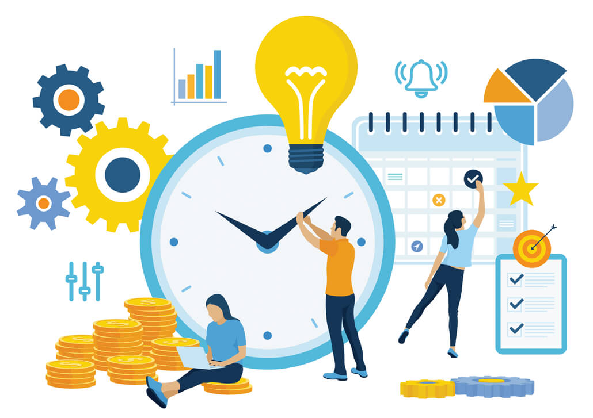

Aperçu du projet
LeGrand est une application web développée pour simplifier et automatiser la création de documents techniques destinés aux employés chargés de l'assemblage et de la mise en œuvre d'outils et produits industriels. Cette solution vise à améliorer l'efficacité opérationnelle et à réduire les erreurs dans la production de documentation.
L'application propose une interface intuitive permettant aux utilisateurs de générer rapidement des documents standardisés en remplissant des formulaires structurés. Les documents sont ensuite formatés automatiquement selon les normes de l'entreprise, ce qui garantit une cohérence et une qualité professionnelle.
Fonctionnalités principales
- Générateur de documents techniques avec templates personnalisables selon les besoins
- Interface utilisateur moderne et responsive développée avec Vue.js
- Système de formulaires dynamiques s'adaptant au type de produit sélectionné
- Export des documents dans différents formats (PDF, Word, etc.)
- Gestion des utilisateurs avec différents niveaux d'accès et permissions
- Historique et versioning des documents créés pour assurer la traçabilité
- API REST développée avec Node.js pour gérer les données et la logique métier
Technologies utilisées
Le frontend de l'application est développé avec Vue.js, un framework JavaScript progressif qui permet de créer des interfaces utilisateur réactives et performantes. TypeScript est utilisé pour apporter un typage fort et améliorer la maintenabilité du code.
Le backend repose sur Node.js, offrant une architecture légère et scalable. L'API REST gère l'authentification, la validation des données, et la génération des documents. Une base de données relationnelle stocke les informations des produits, utilisateurs et documents générés.
Compétence BUT démontrée
LeGrand — Application web de génération de documents techniques
Niveau estimé : 3 — AutonomieDescription : Dans le cadre d'un projet en lien avec l'entreprise Legrand, nous avons développé une application web permettant aux employés chargés de l'assemblage industriel de générer automatiquement des documents techniques standardisés. Ce projet s'est déroulé dans un cadre semi-professionnel avec un client réel, ce qui nous a obligés à structurer notre travail selon un vrai cycle de développement : recueil des besoins, rédaction du backlog, sprints, livraisons intermédiaires et ajustements selon les retours.
Mon rôle : J'ai participé à toutes les phases du cycle : j'ai contribué à l'analyse des besoins lors des échanges avec le client (Legrand), à la rédaction et priorisation du backlog (découpage en user stories, estimation), au développement itératif (frontend Vue.js / TypeScript, backend Node.js / API REST), aux phases de test et aux ajustements post-retour client. J'ai eu un rôle actif dans la communication avec le client pour clarifier les exigences et valider les livraisons.
Analyse réflexive
La principale difficulté a été que les besoins du client évoluaient au fil des livraisons : ce qui semblait clair au départ se précisait (ou changeait) une fois que le client voyait une version concrète. Cela m'a appris à ne pas « sur-coder » trop tôt et à livrer des versions fonctionnelles rapidement pour valider les hypothèses. Sur le plan des softskills, ce projet a fortement développé mon sens de la communication : savoir reformuler un besoin client en termes techniques, mais aussi expliquer une contrainte technique à un non-développeur. Il a aussi renforcé mon organisation et ma capacité à prioriser : face à un backlog qui grandit, il faut trancher et justifier ses choix.
Défis rencontrés
Le principal défi était de concevoir un système de templates suffisamment flexible pour s'adapter aux multiples types de documents nécessaires, tout en restant simple d'utilisation pour les employés. Il fallait trouver le bon équilibre entre personnalisation et standardisation.
Un autre aspect complexe était la génération de documents PDF de haute qualité avec une mise en page professionnelle. L'intégration de bibliothèques de génération de documents et l'optimisation des performances pour des documents volumineux ont nécessité un travail approfondi.
Apprentissages
Ce projet m'a permis de développer une expertise complète en développement full-stack moderne. J'ai approfondi mes compétences en Vue.js et découvert les bonnes pratiques de développement avec ce framework, notamment la gestion d'état, les composants réutilisables, et la composition API.
Côté backend, j'ai acquis de l'expérience dans la conception d'APIs REST robustes avec Node.js, la gestion de l'authentification et des permissions, ainsi que l'optimisation des performances. Le travail en équipe et la communication avec les utilisateurs finaux pour comprendre leurs besoins ont également été des aspects enrichissants de ce projet professionnel.